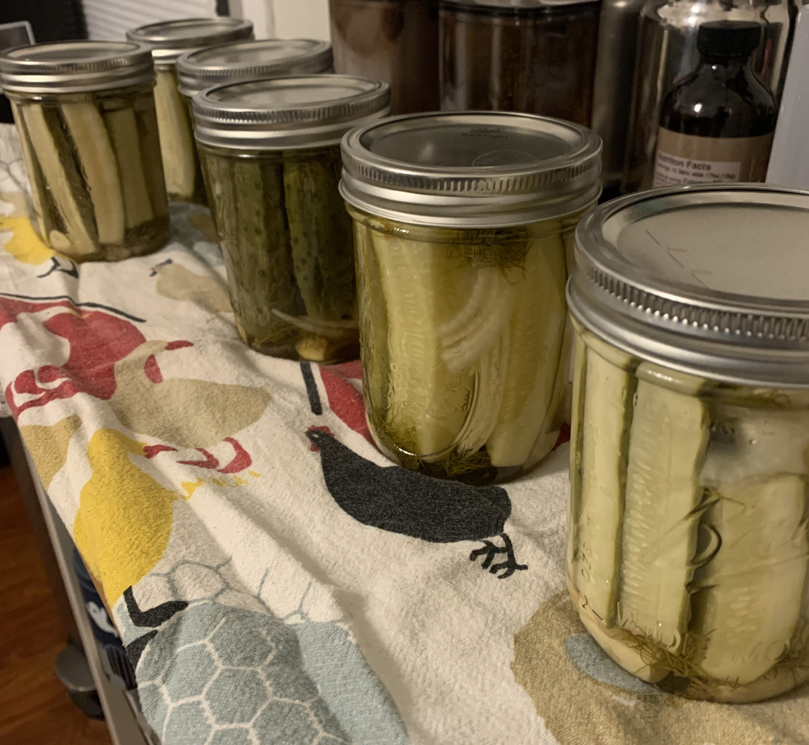

I have no background in farming. Yet I eat produce from my garden almost every day (spring through fall) and eggs laid by my own chickens (we get about three dozen eggs per week). And I can now add another thing: the honey I use to sweeten my daily cup of coffee was stolen from my own bees. Before you think "how impressive!" I want to remind you - I have no background in farming. So how am I able to do all of this? The answer is very simple and I hope it inspires you to try something new. I just do it. Even though I may know basically nothing about it, I try it. Normally, the first attempt is not great (you DO NOT want to taste last year's corn salsa 🤮). But I keep doing it, getting slightly better each time by trying to learn from my past mistakes and letting my natural curiousity guide some light research along the way.
I'm always surprised at how easy some of the most intimidating farming projects can be. The first time we canned vegetables, I was worried the lids wouldn't seal correctly. We've never had a seal break, though. Now, this is one of the most rewarding parts of the experience. The concern is tension, made sweet by the release of knowing it's worked - particularly satisfying in this case because that confirmation comes with a sharp POP as each can cools and the vacuum engages.
This was our second year making pickles using garden cucumbers. Last year's were so good, we used the same recipe (dill, garlic, onion, and spices, brined with a mix of white and apple cider vinegar). Since we didn't have any issues, we tried something new - instead of just spears, we did a couple jars of whole pickles and a couple of sandwich slices.
We're constantly growing and learning through doing but, make no mistake, it doesn't always go so smoothly as my pickling.
After a couple years of keeping bees without any success - our first two colonies barely made it through their first winter,
only to be consumed my wax moths in early summer last year - we have finally developed a couple of very strong hives. Normally,
you don't get honey the first year of keeping bees. You're supposed to leave them all the honey they make so they survive
through the winter. To help them with this, you let them build two brood boxes (deeper boxes where the queen lays all
the eggs) before excluding the queen from the top "supers" (shallow boxes filled only with honey, nectar, and pollen).
Our hives were really thriving in the early summer, so we put the second brood box on each. When we went to inspect them
last week we encountered quite a mess. Instead of following the pattern of building their comb in tidy rows with the
wooden frames, the bees had built crosscomb, perpindicular to the frames. Since that stopped us from being able to remove the
frames and inspect their health, we had to rip out all their hard work. A tense moment, for us and for the swarming
bees! But, an hour and several hundred dead bees later, we had a bucket full of honeycomb. Shortly after that, a big
bowl full of honey - the first we've ever harvested. What a happy accident!
About half the accidental honey we harvested. It's a lot but, since honey never goes bad, we'll have no trouble using it. We are already in the habit of using honey instead of granulated white sugar as much as we can, in our coffee, with yogurt and fruit in parfaits, baking (especially delicious in breads). It is very delicious; the flavor is more interesting than store bought honey because of the unique selection of flowers and tree the bees have visited. As an added bonus, because it is packed with processed nectar and pollen from local vegetation, it is great for my allergies. Living in the Ohio River valley is brutal for allergies - I need all the help I can get!